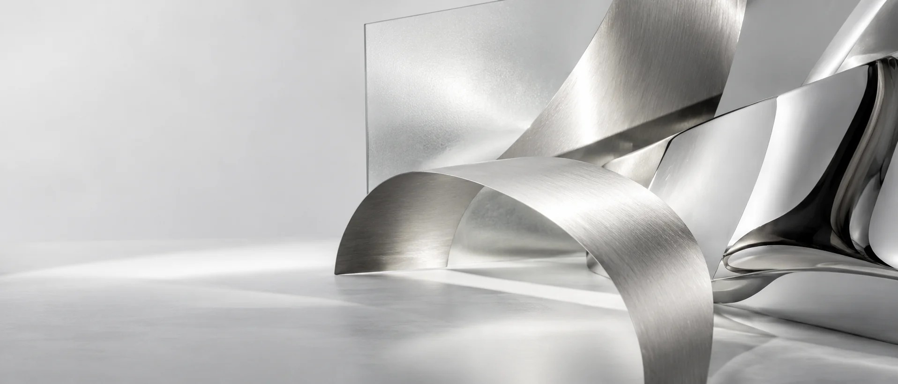

Technologie · Design · Culture
La technologie mérite qu'on s'y attarde.
Analyses, regards et récits pour mieux comprendre un monde qui va vite.
Découvrir LATENCE
Le numéro en cours
01 / 04À la une
Les articles du nouveau média apparaîtront ici.
Une conviction
pour prendre le temps.
pour prendre le temps.
Notre manifeste
Prendre le temps de comprendre.
Dans un monde où tout va toujours plus vite, nous choisissons de prendre le temps de comprendre. Les produits, les idées, les gestes et les usages qui façonnent notre quotidien méritent mieux qu’un regard pressé.
À propos de LATENCEÀ lire à votre rythme
02 / 04Dernières parutions
Chargement des articles…
Quatre rubriques
Des usages aux idées.
Des produits que l’on éprouve aux transformations que l’on observe.